Candidate List 20250728 Previous Day Next Day Section 1: New Sources (age<1d) Cosmological Afterglow
Section 2: Old (1-5d) sources observed last night placeholder
Section 1: New Afterglow/FBOT Cands Last Night (4)
1. ZTF25abeuolv (Afterglow?) [Back to Top] [Share] [Trigger Swift] [Fritz ] [Lasair ]RA, Dec: 325.8749, 22.188 21h43m29.98s, 22d11m16.79sGalactic (l, b): 75.60421, -22.95359 ext(g-r) = 0.114LegacySurvey: 1 sources in 3 arcsec Closest: d = 2.81 arcsec, 344.4 deg (east of north) photoz=0.05 (68% bounds 0.01, 0.17), type=PSF peak abs mag = -16.91 (68% bounds -14.31, -19.95) Consistent with synchrotron, g-r>0!
2. ZTF25abevyat (Afterglow?) [Back to Top] [Share] [Trigger Swift] [Fritz ] [Lasair ]RA, Dec: 292.32772, -19.6699 19h29m18.65s, -19d-40m-11.63sGalactic (l, b): 19.08552, -16.93851 ext(g-r) = 0.107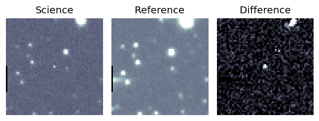 Consistent with synchrotron, g-r>0!
3. ZTF25abewbja (Afterglow?) [Back to Top] [Share] [Trigger Swift] [Fritz ] [Lasair ]RA, Dec: 335.30283, -10.88848 22h21m12.68s, -10d-53m-18.53sGalactic (l, b): 50.26879, -51.1665 ext(g-r) = 0.044LegacySurvey: 1 sources in 3 arcsec Closest: d = 3.15 arcsec, 130.7 deg (east of north) photoz=0.52 (68% bounds 0.41, 0.65), type=PSF peak abs mag = -21.82 (68% bounds -21.25, -22.44) Consistent with synchrotron, g-r>0!
4. ZTF25abeyfgl (Afterglow?) [Back to Top] [Share] [Trigger Swift] [Fritz ] [Lasair ]RA, Dec: 0.60968, -7.376 0h 2m26.32s, -7d-22m-33.62sGalactic (l, b): 90.22375, -67.08258 ext(g-r) = 0.044LegacySurvey: 1 sources in 3 arcsec Closest: d = 4.14 arcsec, 352.1 deg (east of north) photoz=0.47 (68% bounds 0.33, 0.6), type=PSF peak abs mag = -22.7 (68% bounds -21.83, -23.35) Consistent with synchrotron, g-r>0!
Section 2: Older Sources Observed Last Night (29)
0. ZTF25abdhyhr (Afterglow?) [Back to Top] [Share] [Trigger Swift] [Fritz ] [Lasair ]RA, Dec: 332.187, -27.85358 22h 8m44.88s, -27d-51m-12.90sGalactic (l, b): 22.12031, -54.08103 ext(g-r) = 0.021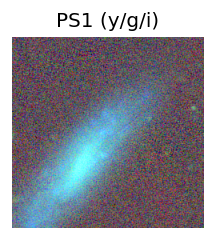 Consistent with synchrotron, g-r>0!
1. ZTF25abdjgeu (Afterglow?) [Back to Top] [Share] [Trigger Swift] [Fritz ] [Lasair ]RA, Dec: 169.01632, 25.86434 11h16m3.92s, 25d51m51.63sGalactic (l, b): 210.89138, 68.65562 ext(g-r) = 0.019LegacySurvey: 1 sources in 3 arcsec Closest: d = 2.93 arcsec, 40.3 deg (east of north) photoz=1.11 (68% bounds 0.93, 1.25), type=REX peak abs mag = -26.4 (68% bounds -25.92, -26.73)
2. ZTF25abdkljn (Afterglow?) [Back to Top] [Share] [Trigger Swift] [Fritz ] [Lasair ]RA, Dec: 274.21001, -5.18525 18h16m50.40s, -5d-11m-6.89sGalactic (l, b): 24.34193, 5.28366 ext(g-r) = 1.197
3. ZTF25abdnybr (Afterglow?) [Back to Top] [Share] [Trigger Swift] [Fritz ] [Lasair ]RA, Dec: 323.15944, -7.57104 21h32m38.27s, -7d-34m-15.73sGalactic (l, b): 45.97169, -39.1014 ext(g-r) = 0.036peak abs mag = nan LegacySurvey: 1 sources in 3 arcsec Closest: d = 2.62 arcsec, 191.4 deg (east of north) photoz=0.61 (68% bounds 0.46, 0.87), type=PSF peak abs mag = -23.99 (68% bounds -23.28, -24.96)
4. ZTF25abdpjdl (FBOT?) [Back to Top] [Share] [Trigger Swift] [Fritz ] [Lasair ]RA, Dec: 350.39183, 22.43482 23h21m34.04s, 22d26m5.36sGalactic (l, b): 97.08335, -35.88564 ext(g-r) = 0.062peak abs mag = -23.26 LegacySurvey: 1 sources in 3 arcsec Closest: d = 1.56 arcsec, 112.7 deg (east of north) photoz=0.04 (68% bounds 0.03, 0.06), type=SER peak abs mag = -17.23 (68% bounds -16.66, -17.69)
5. ZTF25abdsrto (Afterglow?) [Back to Top] [Share] [Trigger Swift] [Fritz ] [Lasair ]RA, Dec: 290.75235, -8.43592 19h23m0.57s, -8d-26m-9.31sGalactic (l, b): 28.92551, -10.82363 ext(g-r) = 0.269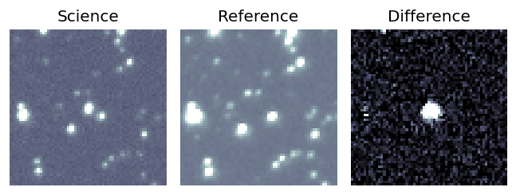
6. ZTF25abdsuyq (Afterglow?) [Back to Top] [Share] [Trigger Swift] [Fritz ] [Lasair ]RA, Dec: 268.37645, -17.31189 17h53m30.35s, -17d-18m-42.82sGalactic (l, b): 10.91897, 4.40514 ext(g-r) = 1.042
7. ZTF25abdtpbf (Afterglow?) [Back to Top] [Share] [Trigger Swift] [Fritz ] [Lasair ]RA, Dec: 255.50577, -24.85555 17h 2m1.38s, -24d-51m-19.97sGalactic (l, b): 357.93707, 10.33422 ext(g-r) = 0.356
8. ZTF25abdxoob (FBOT?) [Back to Top] [Share] [Trigger Swift] [Fritz ] [Lasair ]RA, Dec: 336.92484, 4.40386 22h27m41.96s, 4d24m13.90sGalactic (l, b): 69.65149, -43.11547 ext(g-r) = 0.125peak abs mag = -19.98 LegacySurvey: 1 sources in 3 arcsec Closest: d = 0.86 arcsec, 261.4 deg (east of north) photoz=0.12 (68% bounds 0.08, 0.17), type=REX peak abs mag = -19.02 (68% bounds -18.19, -19.93)
9. ZTF25abdxwqc (Afterglow?) [Back to Top] [Share] [Trigger Swift] [Fritz ] [Lasair ]RA, Dec: 349.28104, 0.58026 23h17m7.45s, 0d34m48.95sGalactic (l, b): 79.79681, -54.19632 ext(g-r) = 0.05LegacySurvey: 1 sources in 3 arcsec Closest: d = 0.96 arcsec, 14.6 deg (east of north) photoz=0.12 (68% bounds 0.11, 0.13), type=SER peak abs mag = -19.04 (68% bounds -18.81, -19.22) Consistent with synchrotron, g-r>0!
10. ZTF25abdzeop (FBOT?) [Back to Top] [Share] [Trigger Swift] [Fritz ] [Lasair ]RA, Dec: 191.16238, 12.54513 12h44m38.97s, 12d32m42.49sGalactic (l, b): 296.37716, 75.33042 ext(g-r) = 0.031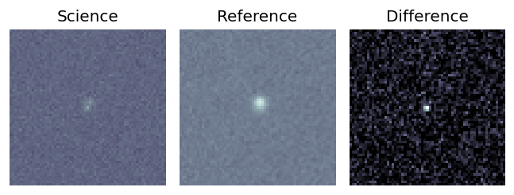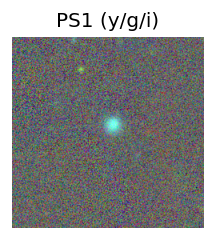 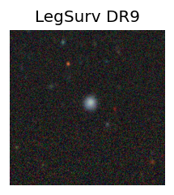 peak abs mag = -18.95 LegacySurvey: 1 sources in 3 arcsec Closest: d = 0.25 arcsec, 312.6 deg (east of north) photoz=0.27 (68% bounds 0.05, 0.97), type=EXP peak abs mag = -21.35 (68% bounds -17.36, -24.69)
11. ZTF25abdzkae (FBOT?) [Back to Top] [Share] [Trigger Swift] [Fritz ] [Lasair ]RA, Dec: 266.82562, 29.26902 17h47m18.15s, 29d16m8.47sGalactic (l, b): 54.13579, 25.93633 ext(g-r) = 0.067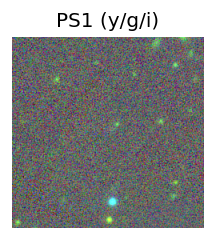 LegacySurvey: 1 sources in 3 arcsec Closest: d = 1.26 arcsec, 289.8 deg (east of north) photoz=0.3 (68% bounds 0.2, 0.49), type=EXP peak abs mag = -21.43 (68% bounds -20.41, -22.69)
12. ZTF25abdzmti (Afterglow?) [Back to Top] [Share] [Trigger Swift] [Fritz ] [Lasair ]RA, Dec: 280.25217, -5.1144 18h41m0.52s, -5d-6m-51.83sGalactic (l, b): 27.19287, -0.01855 ext(g-r) = 24.098
13. ZTF25abdzoyf (Afterglow?) [Back to Top] [Share] [Trigger Swift] [Fritz ] [Lasair ]RA, Dec: 293.47266, -12.89554 19h33m53.44s, -12d-53m-43.95sGalactic (l, b): 25.98387, -15.16178 ext(g-r) = 0.217
14. ZTF25abeckqg (FBOT?) [Back to Top] [Share] [Trigger Swift] [Fritz ] [Lasair ]RA, Dec: 324.16503, 46.544 21h36m39.61s, 46d32m38.39sGalactic (l, b): 91.72987, -4.18933 ext(g-r) = 0.521
15. ZTF25abeewlu (FBOT?) [Back to Top] [Share] [Trigger Swift] [Fritz ] [Lasair ]RA, Dec: 6.17834, 25.05182 0h24m42.80s, 25d 3m6.55sGalactic (l, b): 115.3053, -37.42385 ext(g-r) = 0.038peak abs mag = -21.39 LegacySurvey: 1 sources in 3 arcsec Closest: d = 1.18 arcsec, 312.5 deg (east of north) photoz=0.19 (68% bounds 0.14, 0.29), type=REX peak abs mag = -19.56 (68% bounds -18.81, -20.54)
16. ZTF25abeilpi (Afterglow?) [Back to Top] [Share] [Trigger Swift] [Fritz ] [Lasair ]RA, Dec: 281.00051, -24.83183 18h44m0.12s, -24d-49m-54.58sGalactic (l, b): 9.81677, -9.51419 ext(g-r) = 0.306
17. ZTF25abejrue (FBOT?) [Back to Top] [Share] [Trigger Swift] [Fritz ] [Lasair ]RA, Dec: 323.93097, 7.06392 21h35m43.43s, 7d 3m50.09sGalactic (l, b): 61.46344, -31.61499 ext(g-r) = 0.039peak abs mag = -20.69 LegacySurvey: 1 sources in 3 arcsec Closest: d = 0.19 arcsec, 111.8 deg (east of north) photoz=0.38 (68% bounds 0.22, 0.57), type=REX peak abs mag = -21.56 (68% bounds -20.23, -22.61) Consistent with synchrotron, g-r>0!
18. ZTF25abeldjp (FBOT?) [Back to Top] [Share] [Trigger Swift] [Fritz ] [Lasair ]RA, Dec: 343.27992, 14.34261 22h53m7.18s, 14d20m33.38sGalactic (l, b): 84.59042, -39.56229 ext(g-r) = 0.066peak abs mag = -21.75 LegacySurvey: 1 sources in 3 arcsec Closest: d = 1.24 arcsec, 305.1 deg (east of north) photoz=0.12 (68% bounds 0.11, 0.14), type=SER peak abs mag = -18.67 (68% bounds -18.39, -18.95) Consistent with synchrotron, g-r>0!
19. ZTF25abeqorz (FBOT?) [Back to Top] [Share] [Trigger Swift] [Fritz ] [Lasair ]RA, Dec: 195.33232, 4.23164 13h 1m19.76s, 4d13m53.91sGalactic (l, b): 309.24959, 66.98198 ext(g-r) = 0.03peak abs mag = -20.60 LegacySurvey: 1 sources in 3 arcsec Closest: d = 1.06 arcsec, 259.8 deg (east of north) photoz=0.09 (68% bounds 0.05, 0.14), type=SER peak abs mag = -18.64 (68% bounds -17.42, -19.59)
20. ZTF25aberptp (Afterglow?) [Back to Top] [Share] [Trigger Swift] [Fritz ] [Lasair ]RA, Dec: 305.7606, -12.54776 20h23m2.54s, -12d-32m-51.93sGalactic (l, b): 31.64826, -25.9205 ext(g-r) = 0.066peak abs mag = nan
21. ZTF25abeskta (Afterglow?) [Back to Top] [Share] [Trigger Swift] [Fritz ] [Lasair ]RA, Dec: 305.20404, 22.76861 20h20m48.97s, 22d46m7.01sGalactic (l, b): 63.52752, -7.78841 ext(g-r) = 0.593 Consistent with synchrotron, g-r>0!
22. ZTF25abewhwi (Afterglow?) [Back to Top] [Share] [Trigger Swift] [Fritz ] [Lasair ]RA, Dec: 350.60634, 16.19177 23h22m25.52s, 16d11m30.37sGalactic (l, b): 93.83409, -41.59614 ext(g-r) = 0.029peak abs mag = -17.25
23. ZTF25abewmbw (FBOT?) [Back to Top] [Share] [Trigger Swift] [Fritz ] [Lasair ]RA, Dec: 338.88668, 33.14545 22h35m32.80s, 33d 8m43.61sGalactic (l, b): 92.71162, -21.6329 ext(g-r) = 0.092LegacySurvey: 1 sources in 3 arcsec Closest: d = 1.28 arcsec, 96.3 deg (east of north) photoz=0.53 (68% bounds 0.31, 0.89), type=REX peak abs mag = -22.08 (68% bounds -20.7, -23.46)
24. ZTF25abewmfj (Afterglow?) [Back to Top] [Share] [Trigger Swift] [Fritz ] [Lasair ]RA, Dec: 345.57775, 31.03046 23h 2m18.66s, 31d 1m49.66sGalactic (l, b): 96.95293, -26.2786 ext(g-r) = 0.099LegacySurvey: 1 sources in 3 arcsec Closest: d = 1.63 arcsec, 359.3 deg (east of north) photoz=0.84 (68% bounds 0.71, 0.95), type=PSF peak abs mag = -23.94 (68% bounds -23.48, -24.25)
25. ZTF25abewmjr (Afterglow?) [Back to Top] [Share] [Trigger Swift] [Fritz ] [Lasair ]RA, Dec: 337.98148, 32.6787 22h31m55.56s, 32d40m43.32sGalactic (l, b): 91.75251, -21.61408 ext(g-r) = 0.091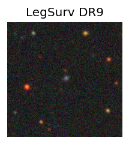 peak abs mag = -18.93 LegacySurvey: 1 sources in 3 arcsec Closest: d = 1.10 arcsec, 302.0 deg (east of north) photoz=0.1 (68% bounds 0.07, 0.16), type=EXP peak abs mag = -18.32 (68% bounds -17.52, -19.39) Consistent with synchrotron, g-r>0!
26. ZTF25abewrxj (Afterglow?) [Back to Top] [Share] [Trigger Swift] [Fritz ] [Lasair ]RA, Dec: 5.54352, 34.76596 0h22m10.45s, 34d45m57.47sGalactic (l, b): 116.14536, -27.71986 ext(g-r) = 0.06peak abs mag = -16.60 Consistent with synchrotron, g-r>0!
27. ZTF25abexbza (Afterglow?) [Back to Top] [Share] [Trigger Swift] [Fritz ] [Lasair ]RA, Dec: 2.82411, 46.9609 0h11m17.79s, 46d57m39.25sGalactic (l, b): 115.8474, -15.35792 ext(g-r) = 0.12 Consistent with synchrotron, g-r>0!
28. ZTF25abeyogz (FBOT?) [Back to Top] [Share] [Trigger Swift] [Fritz ] [Lasair ]RA, Dec: 327.51972, -10.43359 21h50m4.73s, -10d-26m-0.91sGalactic (l, b): 45.35054, -44.25132 ext(g-r) = 0.042LegacySurvey: 1 sources in 3 arcsec Closest: d = 0.13 arcsec, 170.7 deg (east of north) photoz=0.23 (68% bounds 0.14, 0.34), type=REX peak abs mag = -19.75 (68% bounds -18.5, -20.71) Consistent with synchrotron, g-r>0! 
 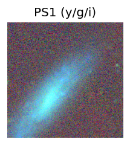
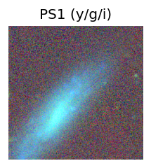


 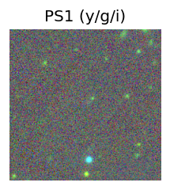
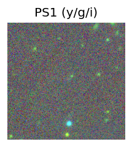


 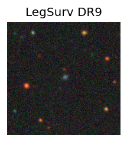
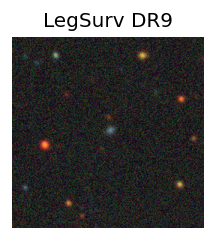